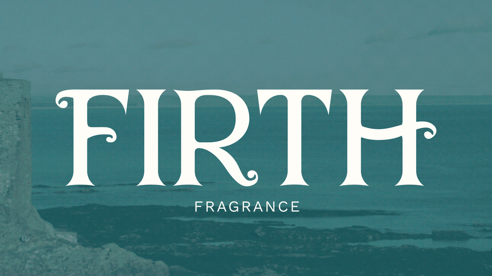
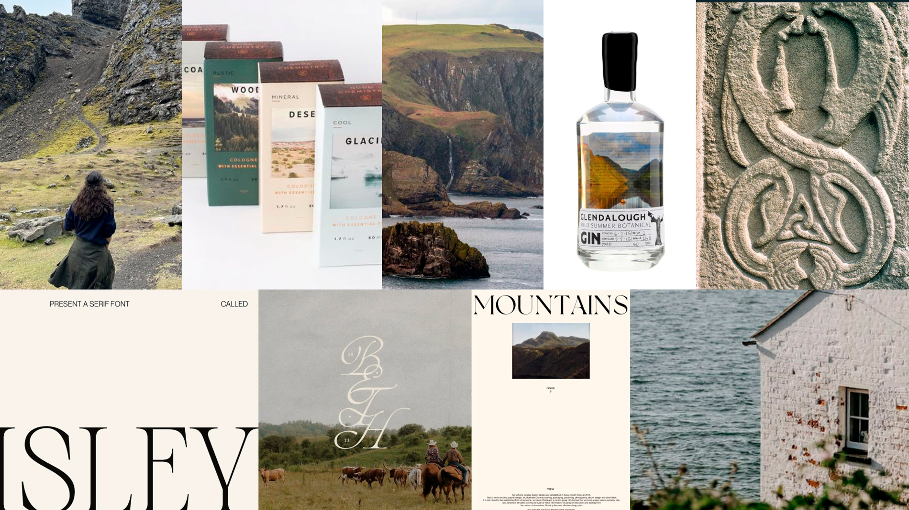
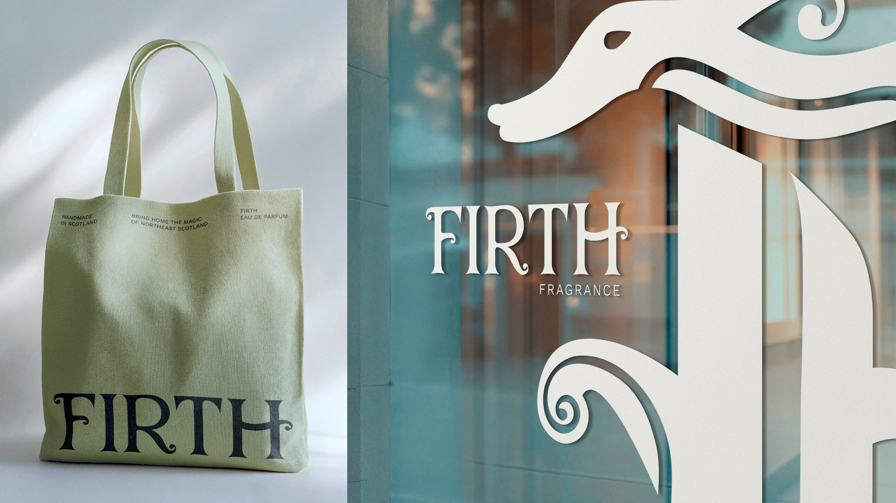
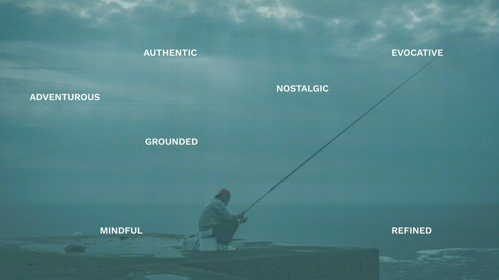
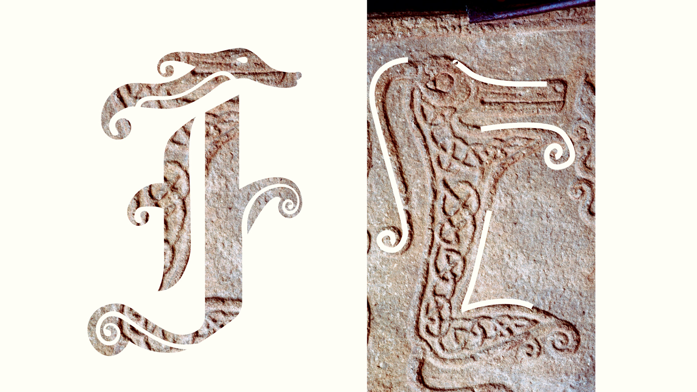
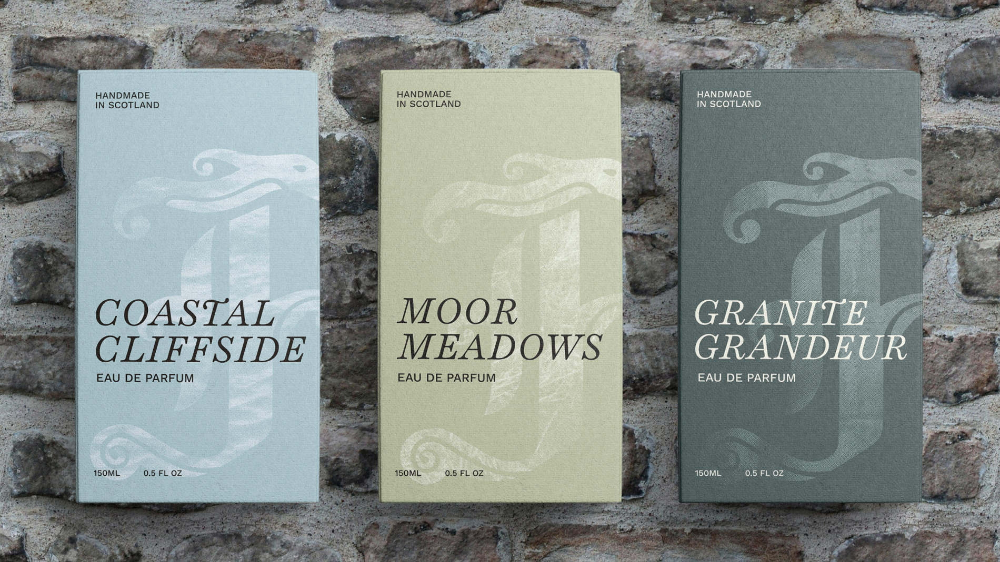
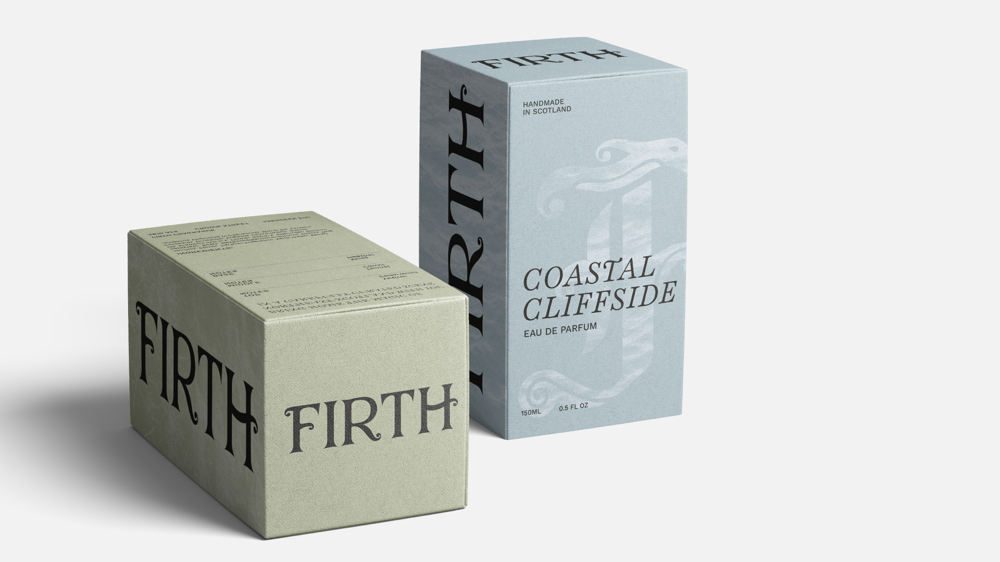
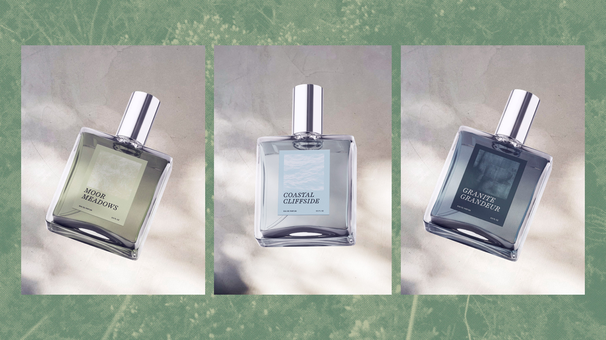
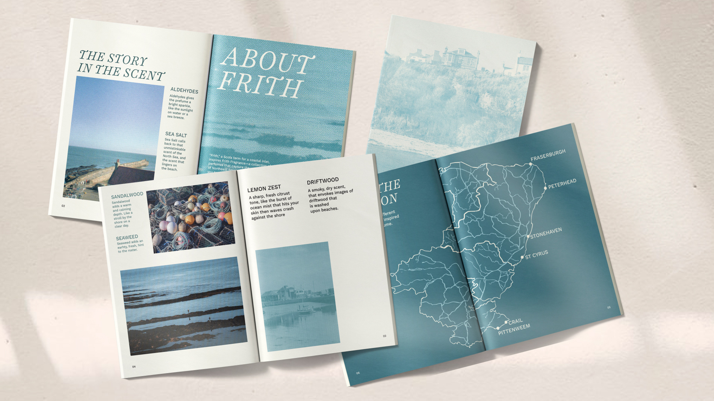
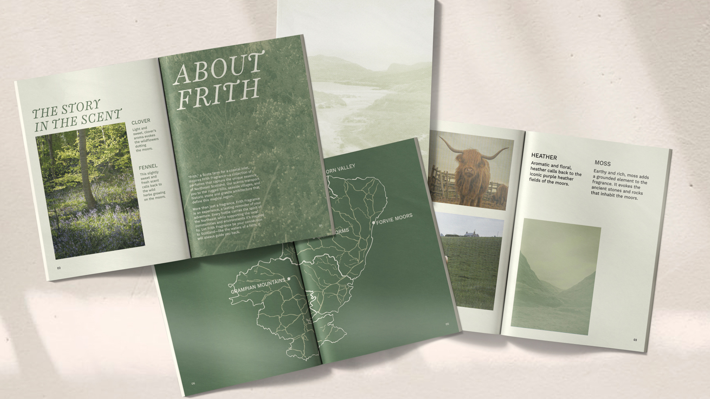

Firth’s branding draws inspiration from Scottish history and natural textures, balancing regional character with the refined elegance of perfume. During the process of defining the brand identity, the decision to switch from dark hues to lighter neutrals helped keep the design feeling unisex rather than overly masculine, ensuring that Firth remains a gift any traveler can enjoy.
The layout was adjusted so the logo serves as a unifying brand graphic. Photography was scaled back to function as a textured background, maintaining an airy, elegant feel while reflecting the muted greys and natural tones of the Northeast.


Wander Northeast Scotland, and our logo and graphic mark may feel familiar—its form is inspired by the Pictish sea beast, a symbol etched into the region’s stones by the early medieval Picts. The typographic logo (seen below) draws from Celtic patterns, incorporating intricate swirls and interlacing lines.



Each scent draws from a defining part of Northeast Scotland: the character of its coastal fishing towns, the calm of its windswept moors, and the strength of its granite architecture. A short description on each box highlights the fragrance notes and the inspiration behind them. Each scent is also accompanied by a poem, capturing the atmosphere and mood that inspired its creation.




Each scent includes a magazine that shares its story and origins, encouraging exploration of Northeast Scotland’s overlooked gems. It not only explains the ingredients and creative process behind each perfume but also invites visitors to engage with the region more deeply, turning a simple fragrance into a multi-sensory journey that connects memory, place, and story.